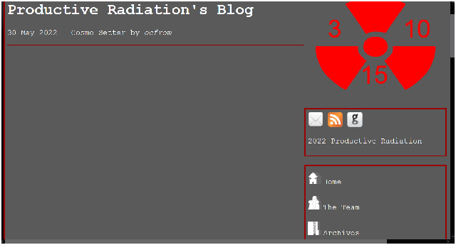
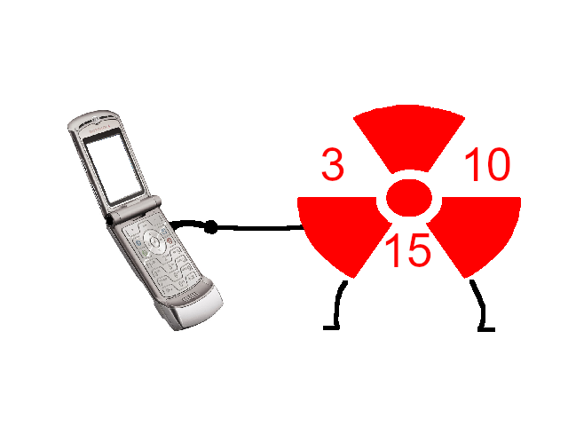

2022 Productive Radiation
Design by Atomyiik
07 JUNE 2022 BY ATOMYIIK
Quite a few things happened during this week, so here's the scoop!
I've finally finished the website redesign. It took like, two days. I noticed the website did really look too hot in smaller dimensions, so that's really the main reason I made the update (see picture below).
In the worst cases, it could even look like this...
Hopefully, this redesign will help out those on their mobile devices or with smaller screens!
(We also now have a TUMBLR BLOG run and set up by Jay. Thank you!)
I (ocfrom) added a Uproots section at the request of Jay. Uproots is a surreal RPG being developed by Jay (and some other people I think including me). It has a really cool soundtrack (seriously, listen to this!) and I think it'll be a great idea to play it when it comes out.
Thanks for reading this roundup! More things are to come from Productive Radiation!
Go back to articles